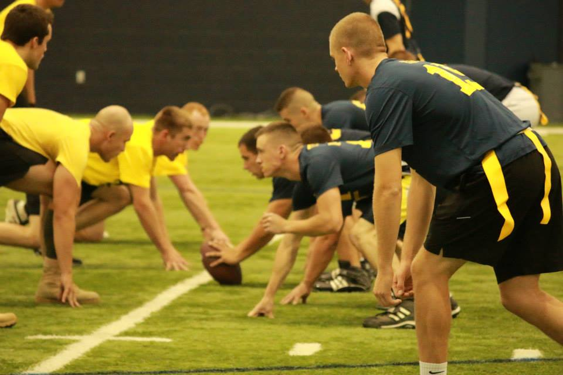
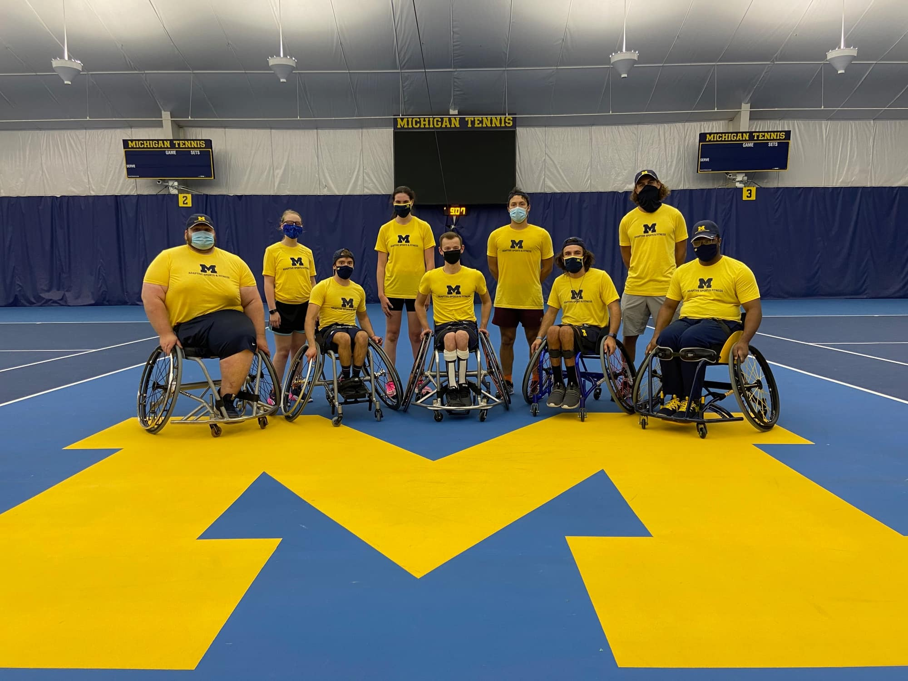

Compete
For those of us who enjoy exercise with a more social context, the University of Michigan offers several options -- at varying experience levels and time commitments -- to join a team and compete.
Whether you’re just here to have fun with some friends or you want to fulfill your dreams of playing like a D1 athlete, Michigan has the team for you. Read on to find out which program best suits you and your athletic abilities!
Intramural Sports
If you're not looking for a huge time commitment, IM sports are for you! You can form a team and join an intramural league with weekly matches. Or, if you don’t want to commit to a season of play, you can opt to participate in our tournaments.
IM Sports are contained in several leagues, which vary by experience level:
- Competitive/Advanced League: This is a competitive level that has priority to play in athletic venues when space is available
- Recreational/Beginner League: This level is less competitive and more recreational. This league is good for beginners or those who just want to play for fun
- Graduate/Faculty/Staff League: These leagues are for graduates and U‑M employees
- Fraternity League: This league is for members of Fraternity & Sorority Life
IM Sports offered vary by season. For the newest information, refer to the Rec Sports website.

Club Sports
For those looking for a more competitive atmosphere, UM club sports are more formal student orgs that practice more frequently and compete against other universities.
The University offers over 30 club teams, both mens and womens, and most teams require a tryout. Updated tryout information can be found on the Rec Sports website.

Adaptive Sports and Fitness
For athletes with disabilities, Michigan’s Adaptive Sports and Fitness programs provide exciting opportunities for competitive sports. ASFSG is a University of Michigan student group that has the objective of engaging undergraduate and graduate students to educate, spread awareness, and get people involved in adaptive sport.
ASFSG currently offers opportunities for athletes to compete in several Paralympic sports:
- Wheelchair tennis
- Track and field
- Para-equestrian
- Wheelchair basketball (recreational)
A subset of ASFSG, the Michigan Adaptive Sports and Inclusive Recreation Initiative (ASIRI) aims to reduce the barriers and increase the access to physical fitness opportunities for children with and without physical disabilities by embedding adaptive sports and inclusive recreation programming into the physical education curriculum of Michigan public school systems.